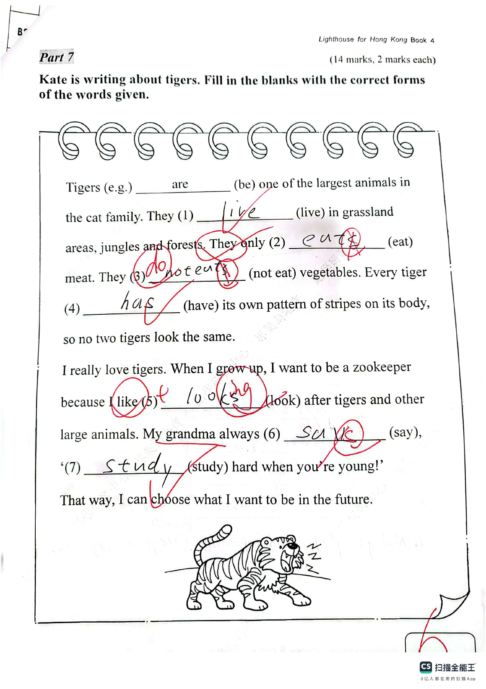

Answer: 5
已掌握
| # | 单词/词组 | 中文意思 | 例句/说明 | 已掌握 |
|---|---|---|---|---|
| noun 名词 | ||||
| 1 | parents | 父母 | My parents love me. | |
| 2 | cream | 奶油 | I like cream on my cake. | |
| 3 | website | 网站 | The school website has news. | |
| 4 | nurse | 护士 | The nurse helps patients. | |
| 5 | future | 未来 | I will study hard in the future. | |
| 6 | chef | 厨师 | The chef cooks dinner. | |
| 7 | meat | 肉类 | I eat meat for dinner. | |
| 8 | hospital | 医院 | The ambulance took him to the hospital. | |
| 9 | plane | 飞机 | We travelled to Japan by plane. | |
| 10 | poem | 诗歌 | Read the poem. | |
| verb 动词 | ||||
| 11 | send | 发送 | I will send you a postcard. | |
| 12 | feel | 感觉 | I feel happy today. | |
| phrase 短语 | ||||
| 13 | years old | 年龄 | I am seven years old. | |
| 14 | school bus | 校车 | We take the school bus every morning. | |
| adjective 形容词 | ||||
| 15 | quiet | 安静的 | Please be quiet. | |
| 16 | popular | 流行的 | This song is popular with children. | |
| uncategorized 未分类 | ||||
| 17 | sea | 大海 | We swam in the sea. | |
| 18 | floor | 楼层 | Our classroom is on the second floor. | |
| 19 | find | 找到 | I cannot find my pencil. | |
| 20 | kitchen | 厨房 | Dad is cooking in the kitchen. | |
| # | 单词/词组 | 中文意思 | 例句/说明 | 已掌握 |
|---|---|---|---|---|
| adjective 形容词 | ||||
| 1 | cuddly | 软乎乎的；让人想抱的 | The toy bear is very cuddly. | |
| 2 | safe | 安全的 | This place is safe. | |
| 3 | brilliant | 聪明的；杰出的 | That is a brilliant idea. | |
| 4 | excellent | 优秀 | Your work is excellent. | |
| 5 | sad | 难过的；伤心的 | I feel sad because I miss my friends. | |
| 6 | careless | 粗心的；不小心的 | A careless mouse ran across the lion's paw. | |
| 7 | wise | 明智的；聪明的 | The wise man gave good advice. | |
| noun 名词 | ||||
| 8 | home | 家 | We stayed at home in the afternoon. | |
| 9 | leaflet | 传单 | This leaflet tells us about the school fair. | |
| 10 | example | 例子 | This is an example. | |
| 11 | worm | 虫子；蚯蚓 | The bird catches a worm. | |
| 12 | workplace | 工作地点 | A school is a teacher's workplace. | |
| 13 | festival | 节日 | We go to the festival. | |
| 14 | phrases | 短语 | These phrases are easy to remember. | |
| 15 | Chinese | 语文；中文 | Some pupils like Chinese. | |
| noun phrase 名词短语 | ||||
| 16 | police dog | 警犬 | The police dog is clever. | |
| 17 | an apple pie | 苹果派 | She'd like an apple pie. | |
| 18 | General Studies | 常识科 | Some pupils like General Studies. | |
| verb 动词 | ||||
| 19 | swim | 游泳 | I can swim. | |
| verb phrase 动词短语 | ||||
| 20 | play badminton | 打羽毛球 | I can play badminton but I can't play football. | |
| 21 | play the piano | 弹钢琴 | I want to play the piano every day. | |
| 22 | play the violin | 拉小提琴 | He wants to learn to play the violin. | |
| 23 | have a barbecue | 烧烤 | I want to have a barbecue. | |
| 24 | go camping | 去露营 | I want to go camping. | |
| 25 | plant vegetables | 种蔬菜 | Ben wants to plant vegetables. | |
| 26 | have afternoon tea | 喝下午茶 | We have afternoon tea together. | |
| 27 | have a buffet meal | 吃自助餐 | We have a buffet meal at the hotel. | |
| uncategorized 未分类 | ||||
| 28 | lucky | 幸运的 | I was lucky to find my lost key. | |
| 29 | thief | 小偷 | The thief stole a bike. | |
| 30 | adult | 成年人 | Ask an adult to help you cross the road. | |
| # | 单词/词组 | 中文意思 | 例句/说明 | 已掌握 |
|---|---|---|---|---|
| time/date 时间日期 | ||||
| 1 | June | 六月 | June is the sixth month. | |
| time unit 时间单位 | ||||
| 2 | year | 年 | A year has 12 months. | |
| 3 | hour | 时 | An hour has 60 minutes. | |
| directions 方向 | ||||
| 4 | south | 南 | South is a direction. | |
| numbers 数字 | ||||
| 5 | one | 1 | One is 1. | |
| 6 | seven | 7 | Seven is 7. | |
| 7 | sixty | 60 | Sixty is 60. | |
| 8 | hundred | 百 | One hundred is 100. | |
| ordinal numbers 序数 | ||||
| 9 | first | 第一 | This is the first shape. | |
| 10 | third | 第三 | This is the third shape. | |
| solid shape 立体图形 | ||||
| 11 | pentagonal prism | 五棱柱 | A pentagonal prism has pentagonal faces. | |
| 12 | hexagonal pyramid | 六棱锥 | A hexagonal pyramid has one hexagonal base and six triangular side faces. | |
| plane shape 平面图形 | ||||
| 13 | Pentagon | 五边形 | A pentagon has five sides. | |
| geometry 几何 | ||||
| 14 | acute angle | 锐角 | An acute angle is smaller than a right angle. | |
| 15 | obtuse angle | 钝角 | An obtuse angle is greater than 90 degrees and less than 180 degrees. | |
| # | 单词/词组 | 中文意思 | 例句/说明 | 已掌握 |
|---|---|---|---|---|
| operations 运算 | ||||
| 1 | altogether | 一起 | How many are there altogether? | |
| geometry 几何 | ||||
| 2 | right angle | 直角 | A right angle is 90 degrees. | |
| 3 | perpendicular line | 垂直线 | Perpendicular lines meet at a right angle. | |
| 4 | acute angle | 锐角 | An acute angle is smaller than a right angle. | |
| 5 | grid | 网格 | A grid helps us find positions. | |
| 6 | curve | 曲线 | Draw a curve. | |
| question word 题目词 | ||||
| 7 | calculate | 计算 | Calculate the answer. | |
| 8 | estimate | 估计 | Estimate the answer first. | |
| 9 | backwards | 向后；倒着 | Count backwards from 20. | |
| shape 形状 | ||||
| 10 | circle | 圈；圆 | Draw a circle around the answer. | |
| place value 位值 | ||||
| 11 | units | 个位 | The digit is in the units place. | |
| comparison 比较 | ||||
| 12 | more | 更多 | 8 is more than 5. | |
| 13 | heaviest | 最重的 | The 3 kg bag is the heaviest of the 1 kg, 2 kg and 3 kg bags. | |
| time/date 时间日期 | ||||
| 14 | second hand | 秒针 | The second hand goes around the clock once in one minute. | |
| position 位置 | ||||
| 15 | front | 前面 | The door is at the front of the room. | |
| 16 | above | 上面 | The clock is above the board. | |
| operations calculation 运算 | ||||
| 17 | A times B | A✖️B | A times B means multiplication. | |
| 18 | expression | 式子 | Write the expression in horizontal form. | |
| 19 | dividend | 被除数 | The dividend is divided by the divisor. | |
| 20 | divisor | 除数 | The divisor divides the dividend. | |
| 21 | divide A by B | A 除以 B | Divide A by B. | |
| currency money 货币 | ||||
| 22 | dollar | 元 | One dollar has 100 cents. | |
| 23 | note | 纸币 | This is a five-dollar note. | |
| 24 | change | 零钱 | Count the change after paying. | |
| measurement 测量 | ||||
| 25 | millimeter | 毫米 | One millimeter is one tenth of a centimeter. | |
| 26 | kilogram | 千克 | One kilogram is 1,000 grams. | |
| position order 位置和顺序 | ||||
| 27 | following | 下面的 | Answer the following questions. | |
| data charts 统计图 | ||||
| 28 | pictogram | 象形图 | Read the pictogram. | |
| directions tool 方向工具 | ||||
| 29 | compass | 指南针 | A compass shows directions. | |
| 句型结构 | ||||
| 30 | ... is to the south of ... | ......位于......的南侧。 | The library is to the south of the shop. | |
